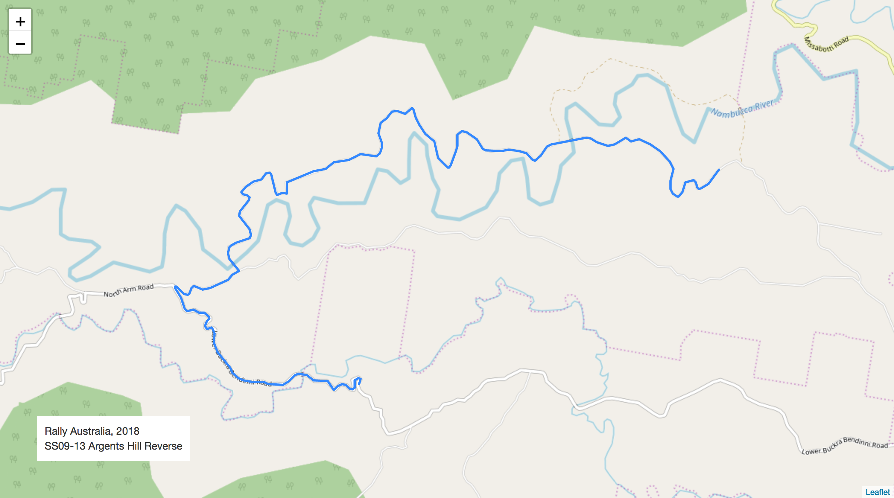
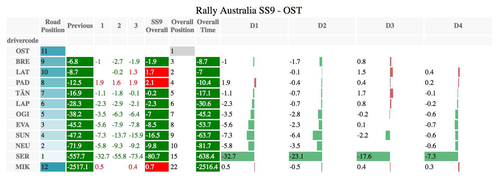
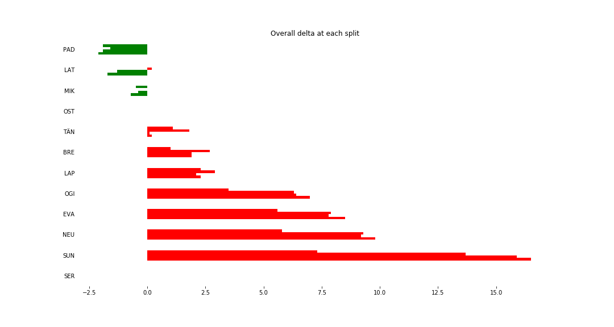
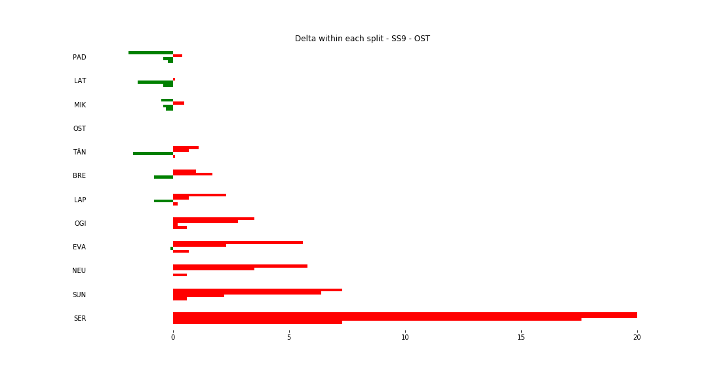
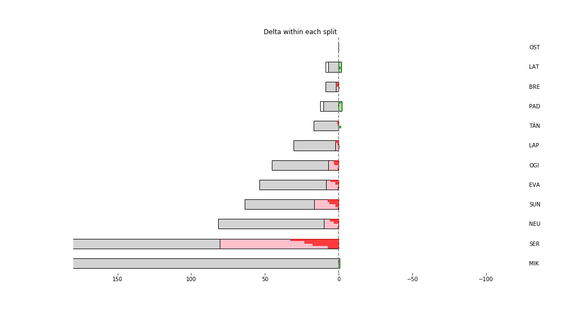

Stage Map - Australia, 2018 - SS9 - Relative Split Times


Stage Overall Split Delta Chart - Australia, 2018 - OST - SS9
For the specified driver, show the overall stage time delta at each split relative to the other drivers. 
Stage Within Split Delta Chart - Australia, 2018 - OST - SS9
For the specified driver, show the delta for each split section relative to the other drivers. 
Stage Progress Chart - Australia, 2018 - OST - SS9
The stage progress chart shows times rebased relative to the specified driver and highlights:
- the overall gap relative to other drivers at the start of the stage;
- the time gained / lost relative to other drivers on the stage;
- the overall gap relative to other drivers at the end of the stage. 
| Driver | Team | Elapsed Duration | Position | Class Rank | diffFirst | diffPrev |
|---|---|---|---|---|---|---|
| PAD | HYUNDAI SHELL MOBIS WRT | 00:07:20.9 | 1 | 1 | 00:00:00 | 00:00:00 |
| LAT | TOYOTA GAZOO RACING WRT | 00:07:21.3 | 2 | 2 | 00:00:00.4 | 00:00:00.4 |
| MIK | HYUNDAI SHELL MOBIS WRT | 00:07:22.3 | 3 | 3 | 00:00:01.4 | 00:00:01 |
| OST | CITROEN TOTAL ABU DHABI WRT | 00:07:23 | 4 | 4 | 00:00:02.1 | 00:00:00.7 |
| TÄN | TOYOTA GAZOO RACING WRT | 00:07:23.2 | 5 | 5 | 00:00:02.3 | 00:00:00.2 |
| BRE | CITROEN TOTAL ABU DHABI WRT | 00:07:24.9 | 6 | 6 | 00:00:04 | 00:00:01.7 |
| LAP | TOYOTA GAZOO RACING WRT | 00:07:25.3 | 7 | 7 | 00:00:04.4 | 00:00:00.4 |
| OGI | M-SPORT FORD WORLD RALLY TEAM | 00:07:30 | 8 | 8 | 00:00:09.1 | 00:00:04.7 |
| EVA | M-SPORT FORD WORLD RALLY TEAM | 00:07:31.5 | 9 | 9 | 00:00:10.6 | 00:00:01.5 |
| NEU | HYUNDAI SHELL MOBIS WRT | 00:07:32.8 | 10 | 10 | 00:00:11.9 | 00:00:01.3 |
| SUN | M-SPORT FORD WORLD RALLY TEAM | 00:07:39.5 | 11 | 11 | 00:00:18.6 | 00:00:06.7 |
| SER | M-SPORT FORD WORLD RALLY TEAM | 00:08:43.7 | 21 | 12 | 00:01:22.8 | 00:00:08.6 |